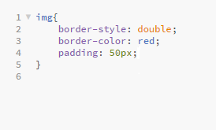

Padding
- The padding is the space around the content
- The css padding properties are used to generate space around content
- The padding clears an area around the content (inside the border) of an element
Picture of padding in browser
Picture with only left padding
Picture of coding for left padding
Picture with padding all around
Picture of code for padding all around
Margin
- Margins are similar to padding, and are defined using similar syntax
- However, unlike padding, the margin portion of an element exists outside the element.
- A margin creates space between the targeted element and surrounding elements.
Box model
Class activity 2 to show how margin is used to overlap squares
Code for class activity 2
Class activity 5 to show how margin is used to position squares
Code for class activity 5
Questions?
Padding and Margin presentation
Here is the download for the powerpoint on padding and margin